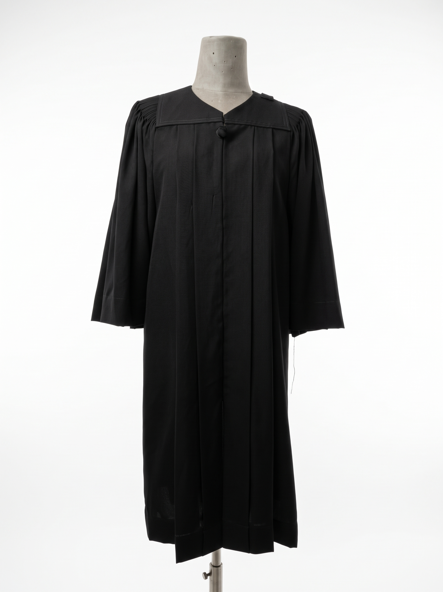

เปลี่ยนจากการกดเลือกที่มุมซ้ายบน มาเป็น **ลูกศรเลือนๆ สไตล์หรูหรา ซ้าย-ขวา** ตรงกลางรูปภาพ พร้อมจุดสลับรูป และระบบเลื่อนเมาส์ขึ้น-ลง เพื่อดูภาพจรดชายผ้า

💡 สามารถกดลูกศรเลือนๆ ซ้าย-ขวา หรือกดจุดไข่ปลา หรือปัดหน้าจอ (Swipe) เพื่อเปลี่ยนรูป
ตัวชุดตัดเย็บตามแพทเทิร์นปรับสมดุลช่วงไหล่เฉพาะบุคคล สวมใส่สบาย ไม่หนัก ไม่รั้งคอ ระบายอากาศยอดเยี่ยม